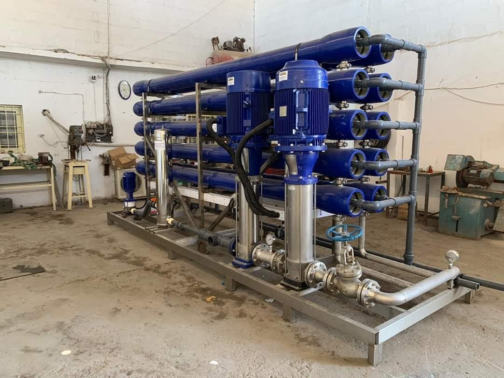
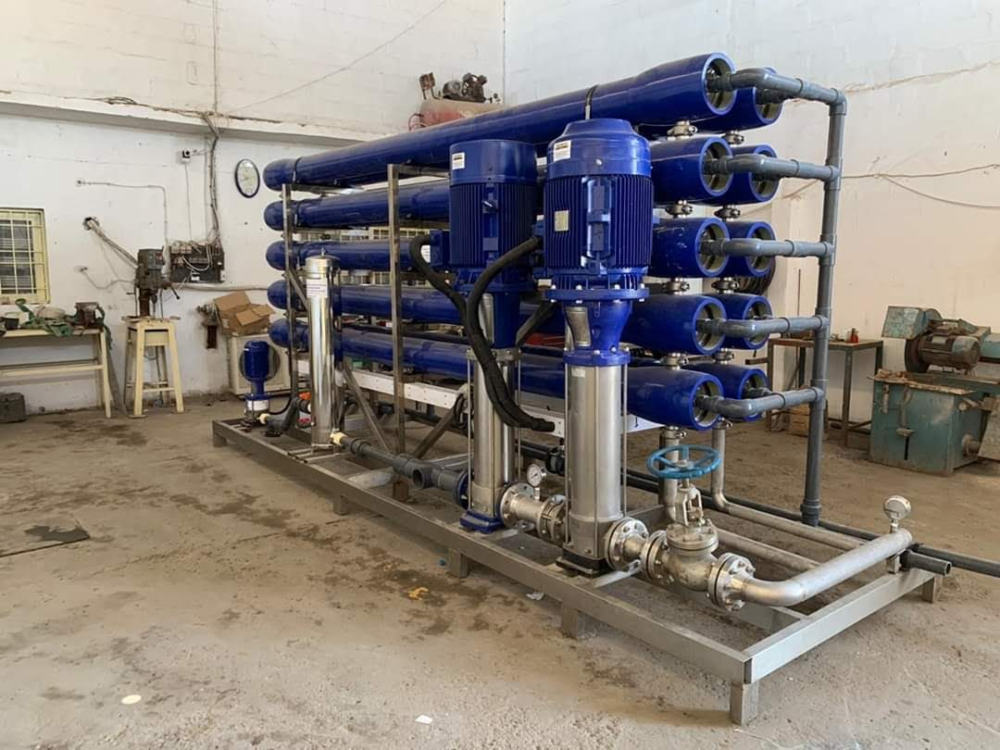

Big Reverse Osmosis Plant
Below you may read about this product and it's process and Installtion Cost.
 

Description About This Product
To understand the purpose and process of Reverse Osmosis you must first understand the naturally occurring process of Osmosis. Osmosis is a naturally occurring phenomenon and one of the most important processes in nature. It is a process where a weaker saline solution will tend to migrate to a strong saline solution. Examples of osmosis are when plant roots absorb water from the soil and our kidneys absorb water from our blood. Below is a diagram which shows how osmosis works. A solution that is less concentrated will have a natural tendency to migrate to a solution with a higher concentration. For example, if you had a container full of water with a low salt concentration and another container full of water with a high salt concentration and they were separated by a semi-permeable membrane, then the water with the lower salt concentration would begin to migrate towards the water container with the higher salt concentration. A semi-permeable membrane is a membrane that will allow some atoms or molecules to pass but not others. A simple example is a screen door. It allows air molecules to pass through but not pests or anything larger than the holes in the screen door. Another example is Gore-tex clothing fabric that contains an extremely thin plastic film into which billions of small pores have been cut. The pores are big enough to let water vapor through, but small enough to prevent liquid water from passing. Reverse Osmosis is the process of Osmosis in reverse. Whereas Osmosis occurs naturally without energy required, to reverse the process of osmosis you need to apply energy to the more saline solution. A reverse osmosis membrane is a semi-permeable membrane that allows the passage of water molecules but not the majority of dissolved salts, organics, bacteria and pyrogens. However, you need to 'push' the water through the reverse osmosis membrane by applying pressure that is greater than the naturally occurring osmotic pressure in order to desalinate (demineralize or deionize) water in the process, allowing pure water through while holding back a majority of contaminants. Below is a diagram outlining the process of Reverse Osmosis. When pressure is applied to the concentrated solution, the water molecules are forced through the semi-permeable membrane and the contaminants are not allowed through.